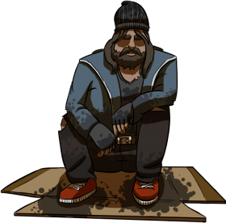
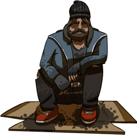

Empowering the Homeless through Technology
Our goal is to bridge the digital divide and empower homeless individuals by giving them the means to reconnect with society, regain their independence, and rebuild their lives.
Compassion, Empathy, and the Drive to Thrive
With every step we take, we're driven by compassion, empathy, and the unwavering belief that everyone deserves a chance to thrive. Our innovative approach goes beyond traditional charity models.
Restoring Dignity and Fostering Hope
We're not just offering a phone, but a lifeline to a brighter future. Through the support of our generous donors and volunteers, we aim to break down barriers and create opportunities for those who need them the most.
A Movement of Change and Inclusivity
But FixItFast+ is more than just about providing phones. It's about restoring dignity, rekindling hope, and reigniting dreams. When you support FixItFast+, you're not just contributing to a charity – you're becoming a part of a movement committed to sparking change and fostering inclusivity.
Join the Mission for Transformation
Join us in our mission to transform lives, one phone at a time. Together, we can bridge the gap, create new possibilities, and make a lasting impact that resonates far beyond the devices we distribute.
Every Connection Counts, Every Contribution Matters
Welcome to FixItFast+, where every connection counts and every contribution matters.